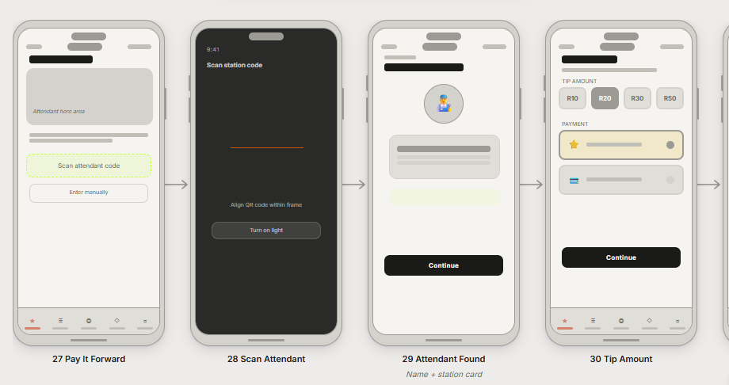
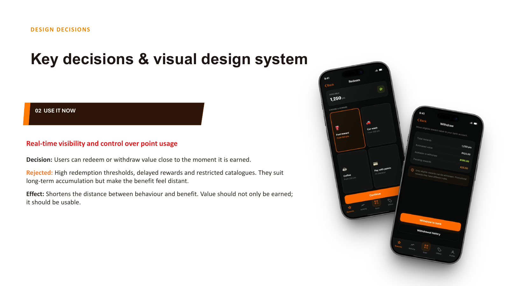
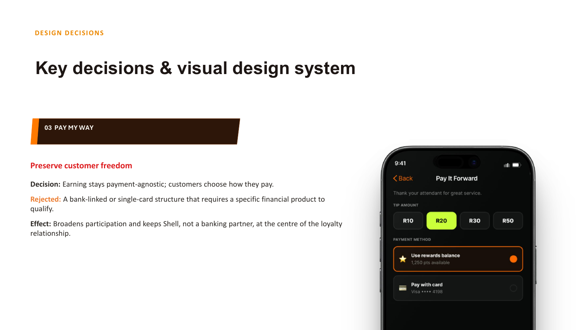

Visibility
Help customers understand their balance and what it is worth.
A mobile loyalty concept shaped by a competitor review, focused on making rewards easier to understand and use during a fuel stop.
I reviewed competing loyalty programmes and developed a concept covering reward tracking, redemption, fuel payment, wallet management and digital tipping. The audit helped identify opportunities around reward visibility, flexible use and the service moment at the pump.
Scope and evidence: Competitor audit and concept prototype; no direct user research or live performance results are claimed.
Loyalty experiences can make it difficult to compare reward value, understand redemption rules or see what a balance can do. The concept explored how to make the value clearer during a familiar fuel-stop journey.
Help customers understand their balance and what it is worth.
Make earning and redemption options easier to understand.
Explore whether digital tipping fits naturally into the refuelling experience.
I compared Sasol Rewards, BP Rewards, Engen 1App, Discovery Vitality Money, eBucks and Tappy. I used the review to identify opportunity areas and shape the proposed experience.
These hypothesis archetypes represent different motivations surfaced through the competitor audit. One needs to understand value across everyday spending; the other values the relationship with attendants and wants choice in how to show appreciation. Together they highlight why the experience should not force everyone into one payment or reward behaviour.


Evidence note: These are research-informed hypotheses based on the competitor audit, not personas built from direct interviews.
The information architecture mirrors the physical station journey. From the dashboard, people can move directly to fuel payment, rewards, tipping, or profile and wallet tasks, with each path broken into clear steps.

Fuel payment and attendant tipping are distinct, direct paths, helping keep the most time-sensitive tasks easy to reach.
Rewards has a clear home for points balance, redemption and withdrawal instead of hiding them in unrelated flows.
Payment methods and wallet management remain accessible so customers can choose how to pay and use value.
These low-fidelity Pay It Forward wireframes map the tipping journey from entry, to scanning and confirming the attendant, to choosing a tip amount and payment method. The high-fidelity concept develops two decisions informed by the competitor audit.


Design decision: Bring fuel and in-store purchases into one visible points balance, so customers have a simple view of what they have earned.
Research rationale: The competitor audit found that low visibility and hard-to-find redemption options weaken perceived value. One balance avoids making customers track separate wallets that reflect internal programme structures.

Design decision: Keep tipping separate from the fuel transaction, with the recipient and amount clearly identified.
Research rationale: The audit identified digital tipping as a possible differentiator when integrated into the rewards journey. A distinct flow makes the act of thanking the attendant clear rather than hiding gratuity inside the fuel payment.
Bring balance and value into view so customers can understand what they have earned.
Consider whether customers should be able to earn without being tied to one payment card.
Consider cash access as one possible use of rewards, while checking feasibility and programme economics.
Offer a way to thank attendants digitally only if customers, attendants and station operators find it useful and workable.
Flexible redemption may increase usefulness but can add cost, rules and support requirements.
Digital tipping should not slow refuelling or create confusion for attendants and customers.
The concept communicates a connected experience across reward visibility, earning, redemption, withdrawal, fuel payment, tipping and wallet management. The competitor audit informed the direction, but it does not prove customers want every proposed feature.
A competitor gap is a useful starting point, not proof of a user need. Features such as cash-out and tipping also affect economics and frontline operations, so they should be tested with customers and service staff before they become MVP commitments.